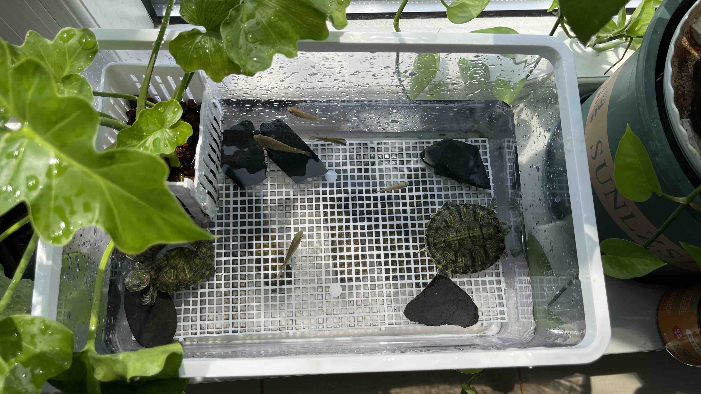
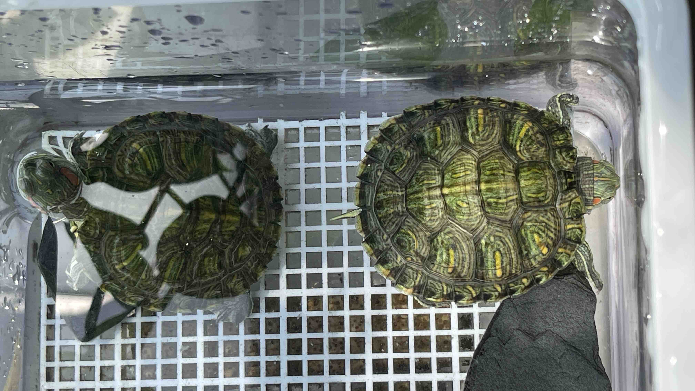

小巴西龟越狱记：两次成功"越狱"经历——捉拿“龟”案
家中小娃养了2只小巴西龟，没几日，就撒手不管了；老婆倒是上心把它们养了起来，不仅把它们伺候得健健壮壮的，还特意给它们的 “豪宅” 种上了绿植。我常开玩笑说：“真羡慕这两只小龟，如果老婆也能像照顾小龟那样无微不至的照顾我，估计我是要经常幸福得在空中漂来漂去啦~”

龟大胆抢食，龟小胆躲猫猫
前不久，老婆妈妈病了，需要回老家照顾她妈妈一周，所以照顾小龟的任务就落到了我头上。这一接手，我才算摸清了俩龟的 “脾气”—— 一只胆大包天，我喂面包虫的时候居然敢直接凑过来抢，就索性叫它 “龟大胆”；另一只则是个实打实的胆小鬼，我刚靠近盆边，它就跟耗子见了猫似的，“嗖” 一下就缩到角落里躲着，连脑袋都不肯露下，就叫它**“龟小胆”** 吧。
小龟越狱，急得找老婆
要说这龟大胆，不仅胆子大，还特爱 “搞事情”—— 总想着越狱！我第一次给它们换完水时，才发现只有一只小龟，心里甚是纳闷：“明明是两只小龟，怎么就少了一只呢？就算换水时它们爬了出来，也不可能钻进下水道，因为地漏都有盖子。“
我开始怀疑自己是不是精神恍惚，就打电话向老婆求证，她是否真的养了两只小龟？显然，是真的养了两只！可能是换水前的某一天，龟大胆就已经越狱了。我找了一圈未见其踪影，也只好先作罢：“算了，说不定过两天它自己又突然冒出来了。“
失龟复得，得而又失
很快到了周末，家里地板也积了层灰，于是我拿起拖把大扫除。拖呀拖，拖呀拖，拖到娃房间的书桌底下时，居然神奇般的发现了龟大胆！我异常的高兴，抓起它，将它送进了盆里。恰好老婆这周日会回来，到时候给她个惊喜，证明我没把她养的小龟弄丢！
周日很快到来，老婆回来了，我第一时间告诉她小龟失而复得，接着绘声绘色地把找小龟的过程讲了一遍。老婆开心地向阳台走去，随后我耳边传来了她的叫喊声：“还是只有一只呀，好动的那只又没影了！“
“怎么可能呢？养小龟的盆也有那么高，它又是怎么爬出来的呢？难道是通过盛食物的白色平台垫脚爬出来的吗？” 可惜我没能目睹它的作案现场，着实遗憾，因为我很是好奇！

再次越狱，捉拿“龟”案
不管怎么说，**龟大胆又越狱了！**这一越狱，就是两个星期！直到今早我又再次拖地，在另外一个小房间里的门口边，我移走一袋东西，准备拖那块地板时，却发现了一块暗暗的东西，一动不动地钉在那儿，不知为何物。出于好奇，我用两个手指头将它捏提起来细看，它居然是龟大胆！
我当时心里一紧，担心它是不是挂了，赶紧碰了碰它的四只小爪子，没想到还有反应！我又惊又喜：“好家伙，两周不吃不喝，居然还活着，这生命力也太顽强了！” 我赶紧把它拿到水龙头下冲了冲，给它补点水分，送回盆里后又立马撒了些面包虫。可它没急着吃，反倒慢悠悠爬进水里 —— 估计是憋坏了，先泡个澡 “洗去风尘” 再说吧~

加固豪宅，看你咋跑
经历了这两次 “越狱事件“，我们总算摸清了龟大胆的性子。老婆用了块小盖子，把盆的另一侧牢牢盖住了，这下看你还怎么越狱，嘿嘿！

 wechat
wechat alipay
alipay